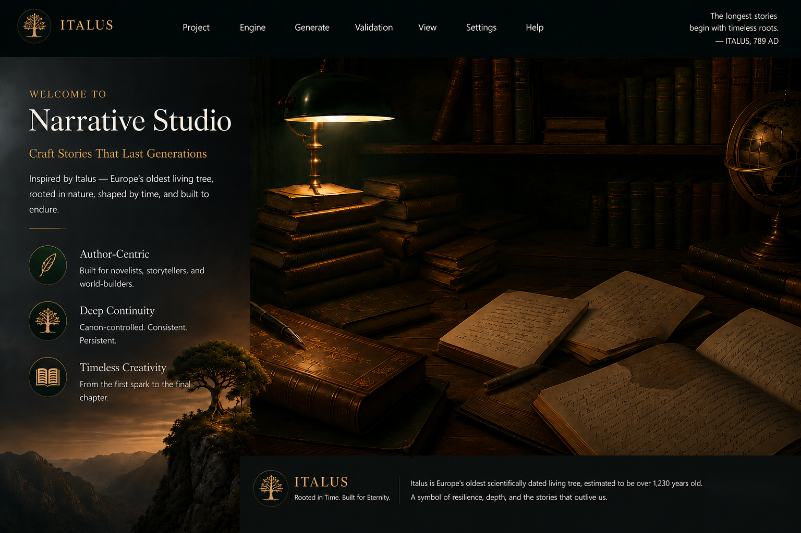
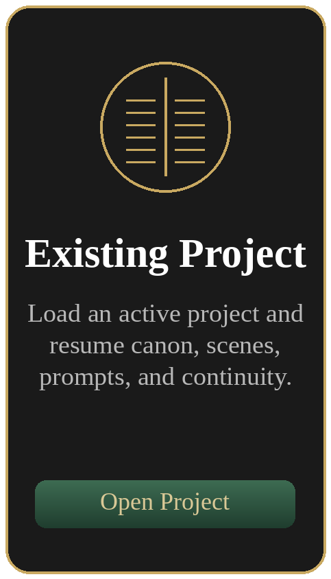
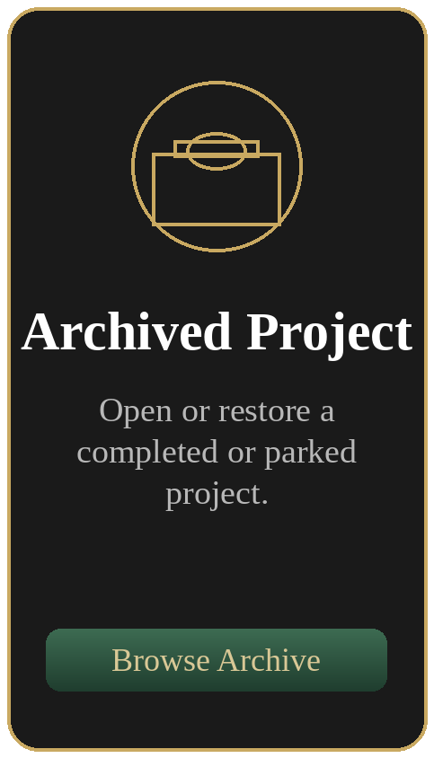

Germinated in 789 AD, surviving over 1,230 years of European history.

The longest stories
begin with timeless roots.
— ITALUS, 789 AD




The longest stories
begin with timeless roots.
— ITALUS, 789 AD


Project Setup
Define the project shell before entering the workspace. Canon setup follows after this stage.
Resume Work
Incomplete projects resume their setup wizard. Ready projects open the workspace.
Archive
Archived projects are restored before resuming setup or workspace entry.
About Italus Narrative Studio
Great stories endure when their roots run deep. Italus helps authors protect canon, preserve creative voice, and build literary worlds that can stand across time.
Germinated in 789 AD, surviving over 1,230 years of European history.
Officially recognized as Europe’s oldest scientifically dated living tree.
Thrives in high-altitude terrain, weathering centuries of shifting climates and eras.
Remains vibrant and growing, proving that a strong foundation can endure indefinitely.
Just as Italus remains true to its ancient roots, the studio preserves the immutable core of your narrative.
Canon becomes the deep root system that keeps a story stable, structured, and consistent.
Your authorial voice is protected as trends shift, while the original creative truth remains intact.
Human inspiration and AI guardrails work together to build stories meant to endure.
Our ManifestoAt our Narrative Studio, we believe great stories are like Italus. They require deep roots to stand tall. In an era of rapid AI generation, we do not replace the creator; we anchor them. The studio acts as digital bedrock for authors — managing canon consistency, protecting creative authenticity, and ensuring your literary universe remains unbreakable over time.
Built to protect your voice. Engineered to endure.
Canon Setup
Confirm the selected genre template before authoring required canon sets.